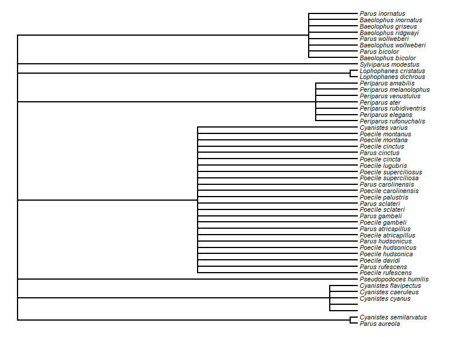
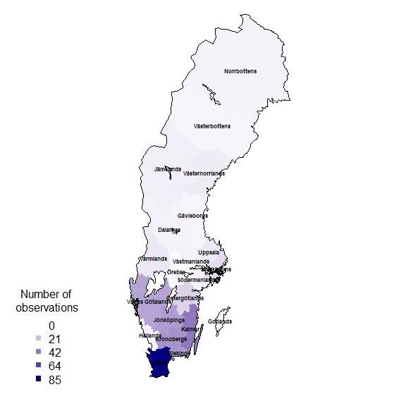

Introduction to SBDI4R
Alejandro Ruete and Debora Arlt
2020-11-13
Source:vignettes/SBDI4R.Rmd
SBDI4R.RmdHere we provide a collection of use-examples showing examples for a range of queries that we think a typical use of the biodiversity infrastructure may want to perform. The examples are extended from a basic set for ALA4R presented at the 2014 ALA Science Symposium.
The SBDI4R package is primarily for accessing data. It includes some filter functions that allow you to filter prior to download. It also includes some simple summary functions, and some function for some simple data exploration. The examples also show you how you can use the data by continued exploring and analysing using other R package.
Please get in contact with us if you have questions regarding the use of the SBDI4R package.
Using SBDI4R
Lets assume you have already installed the package as shown in the main site .
The SBDI4R package must be loaded for each new R session:
library(SBDI4R)
sbdi_config(caching="off")However, the options you stored in .Rprofile if you did it so, will load automatically with the package. Then, check that we have some additional packages that we’ll use in the examples, and install them if necessary.
to_install <- c("ape", "dplyr", "ggplot2", "jpeg", "leaflet","maps", "mapdata",
"maptools", "phytools", "sp", "rgeos", "tidyr", "vegan")
to_install <- to_install[!sapply(to_install, requireNamespace, quietly=TRUE)]
if(length(to_install)>0)
install.packages(to_install, repos="http://cran.us.r-project.org")Example 1: Name searching and taxonomic trees
We want to look at the taxonomy of titmice, but we don’t know what the correct scientific name is, so let’s search for it:
sx <- search_fulltext("parus")
#> [1] "https://species.bioatlas.se/ws/search.json?q=parus&fq=idxtype%3ATAXON"
sx$data[,c( "name","species", "speciesGuid", "rank")]
#> name species speciesGuid rank
#> 1 Parus Linnaeus, 1758 <NA> <NA> genus
#> 2 Parus dichrous Parus dichrous 5788759 species
#> 3 Neuroctenus parus Neuroctenus parus 10213928 species
#> 4 Parus elegans Parus elegans 5788758 species
#> 5 Parus rubidiventris Parus rubidiventris 5788753 species
#> 6 Parus borealis Parus borealis 8786895 species
#> 7 Parus salicarius Parus salicarius 9104351 species
#> 8 Parus superciliosus Parus superciliosus 5788752 species
#> 9 Parus amabilis Parus amabilis 5788755 species
#> 10 Parus rufonuchalis Parus rufonuchalis 5788756 speciesBut we see some e.g. insects (Neuroctenus parus) are also returned. We want to restrict the search to Paridae.
sx <- search_fulltext("parus", fq="family_s:Paridae")
#> [1] "https://species.bioatlas.se/ws/search.json?q=parus&fq=family_s%3AParidae&fq=idxtype%3ATAXON"
sx$data[,c( "name","species", "speciesGuid", "rank")]
#> name species speciesGuid rank
#> 1 Parus Linnaeus, 1758 <NA> <NA> genus
#> 2 Parus dichrous Parus dichrous 5788759 species
#> 3 Parus elegans Parus elegans 5788758 species
#> 4 Parus rubidiventris Parus rubidiventris 5788753 species
#> 5 Parus borealis Parus borealis 8786895 species
#> 6 Parus salicarius Parus salicarius 9104351 species
#> 7 Parus superciliosus Parus superciliosus 5788752 species
#> 8 Parus amabilis Parus amabilis 5788755 species
#> 9 Parus rufonuchalis Parus rufonuchalis 5788756 species
#> 10 Parus obtectus Parus obtectus 8445183 speciesTo restrict the query specifically to birds we can also use the ‘fq’ argument to filter the query (see for all the fields that are queryable), and increase page_size to include more records (default=10):
sx <- search_fulltext("parus", fq="class_s:Aves", page_size=100)
#> [1] "https://species.bioatlas.se/ws/search.json?q=parus&fq=class_s%3AAves&fq=idxtype%3ATAXON&pageSize=100"
head(sx$data[,c( "name","species", "speciesGuid", "rank")])
#> name species speciesGuid rank
#> 1 Parus Linnaeus, 1758 <NA> <NA> genus
#> 2 Parus dichrous Parus dichrous 5788759 species
#> 3 Parus elegans Parus elegans 5788758 species
#> 4 Parus rubidiventris Parus rubidiventris 5788753 species
#> 5 Parus borealis Parus borealis 8786895 species
#> 6 Parus salicarius Parus salicarius 9104351 speciesNow we can download the taxonomic data (note that the search is case-sensitive):
tx <- taxinfo_download("family_s:Paridae",
fields=c("guid", "genus_s", "scientificName", "rank"),
verbose = FALSE)
tx <- tx[tx$rank == "species",] ## restrict to speciesWe can make a taxonomic tree plot using the phytools package:
library(phytools)
#> Warning: package 'phytools' was built under R version 3.6.3
#> Warning: package 'ape' was built under R version 3.6.3
## as.phylo requires the taxonomic columns to be factors
tx$genusS <- as.factor(tx$genusS)
tx$scientificName <- as.factor(tx$scientificName)
## create phylo object of Scientific.Name nested within Genus
ax <- as.phylo(~genusS/scientificName, data=tx)
plotTree(ax, fsize=0.7, ftype="i") ## plot it
Example 2: Get some data, filter the search, get quality assertions, plotting data on a map and save data
Download occurrence data for the “Sommarlånke” and view top of the data table:
x <- occurrences(taxon="Callitriche cophocarpa",
email="test@test.org",
download_reason_id=10)
head(x$data)
table(x$data$dataResourceName)Similarly, we could search by common names
x <- occurrences(taxon="sommarlånke",
email="test@test.org",
download_reason_id=10,
verbose = FALSE)
head(x$data)
table(x$data$dataResourceName)if you get to know what you are doing you could search a batch of species (only scientific names so far)…
taxa <- c("Callitriche", "Anarrhinum")
fq_str <- paste0("raw_name:"", taxa, """)
fq_str <- paste0(fq_str, collapse = " OR ")
xbatch <- occurrences(fq=fq_str,
email="test@test.org",
download_reason_id=10,
verbose = FALSE)
head(xbatch$data)
#> id dataResourceID dataResourceName
#> 1 e34d626a-6ae4-4de7-9349-f7406b5b3535 dr22 Phanerogamic Botanical Collections (S) - Version 3.1
#> 2 b670bb80-2a2c-4e23-9881-4fdf205b2674 dr36 Botany (UPS) - Version 4.2
#> 3 b14b8963-3f30-4fa6-95ce-c19a2ee202cb dr5 Artportalen (Swedish Species Observation System)
#> 4 a7a580c8-43a4-4d40-9315-58626c006092 dr5 Artportalen (Swedish Species Observation System)
#> 5 a672467f-9f9c-488a-a9f7-ab4a7e3f5035 dr5 Artportalen (Swedish Species Observation System)
#> 6 7001a872-8336-4601-a6b0-8fa18eb44375 dr22 Phanerogamic Botanical Collections (S) - Version 3.1
#> catalogueNumber taxonConceptLsid scientificNameOriginal commonNameOriginal
#> 1 S06-19972 5372477 Callitriche terrestris Raf.
#> 2 V-208740 7541309 Callitriche oreophila
#> 3 19484352 8253944 Callitriche hamulata klolånke
#> 4 104958223 5372487 Callitriche stagnalis dikeslånke
#> 5 44886951 8236752 Callitriche cophocarpa sommarlånke
#> 6 S11-40109 5372482 Callitriche heterophylla Pursh
#> scientificName rank commonName
#> 1 Callitriche terrestris Muhl. ex Raf. species terrestrial water-starwort
#> 2 Callitriche oreophila Schotsman species
#> 3 Callitriche brutia subsp. hamulata (Kütz. ex W.D.J.Koch) O.Bolòs & Vigo subspecies
#> 4 Callitriche stagnalis Scop. species Pond water-starwort
#> 5 Callitriche cophocarpa Sendtner species
#> 6 Callitriche heterophylla Pursh species differentleaf waterstarwort
#> kingdom phylum class order species institutionCode collectionCode
#> 1 Plantae Tracheophyta Magnoliopsida Lamiales Callitriche terrestris S VascularPlants
#> 2 Plantae Tracheophyta Magnoliopsida Lamiales Callitriche oreophila UPS BOT
#> 3 Plantae Tracheophyta Magnoliopsida Lamiales Callitriche brutia ArtDatabanken Artportalen
#> 4 Plantae Tracheophyta Magnoliopsida Lamiales Callitriche stagnalis ArtDatabanken Artportalen
#> 5 Plantae Tracheophyta Magnoliopsida Lamiales Callitriche cophocarpa ArtDatabanken Artportalen
#> 6 Plantae Tracheophyta Magnoliopsida Lamiales Callitriche heterophylla S VascularPlants
#> locality
#> 1 Prov. El Oro, Zaruma, wet lateritic ground close to a house, alt. c. 1100 m. Iter Regnellianum sextum. Flora aequatoriensis
#> 2 Terr. Astrida [Butare]
#> 3 SÄBYHOLM
#> 4 Hisingsparken
#> 5 Sumpskog vid VADBÄCKEN 1/2 km E RUDTJ
#> 6 Flora of Ecuador, province Napo, N and E side of Laguna Parcha Cocha, Páramo de Guamani
#> latitudeOriginal longitudeOriginal latitude longitude coordinateUncertaintyInMetres minimumElevationInMeters
#> 1 NA NA NA NA NA NA
#> 2 NA NA NA NA NA NA
#> 3 56.53805 13.08645 56.53805 13.08645 100 NA
#> 4 57.74376 11.92348 57.74376 11.92348 1000 NA
#> 5 62.25654 17.03688 62.25654 17.03688 500 NA
#> 6 -0.27000 -78.15000 -0.27000 -78.15000 NA NA
#> maximumElevationInMeters minimumDepthInMeters maximumDepthInMeters individualCount year day verbatimEventDate
#> 1 NA NA NA NA 1955 19
#> 2 NA NA NA NA 1956 24
#> 3 NA NA NA NA 1990 16
#> 4 NA NA NA NA 2017 2
#> 5 NA NA NA NA 1978 9
#> 6 NA NA NA NA 1979 17
#> basisOfRecord basisOfRecordOriginal taxonomicQuality locationQuality assumedPresentOccurrenceStatus
#> 1 PreservedSpecimen preservedspecimen TRUE NA TRUE
#> 2 PreservedSpecimen preservedspecimen TRUE NA TRUE
#> 3 HumanObservation humanobservation TRUE TRUE FALSE
#> 4 HumanObservation humanobservation TRUE TRUE FALSE
#> 5 HumanObservation humanobservation TRUE TRUE FALSE
#> 6 PreservedSpecimen preservedspecimen TRUE TRUE TRUE
#> countryCoordinateMismatch decimalLatLongCalculatedFromVerbatim firstOfMonth firstOfYear geodeticDatumAssumedWgs84
#> 1 FALSE FALSE FALSE FALSE FALSE
#> 2 FALSE FALSE FALSE FALSE FALSE
#> 3 FALSE FALSE FALSE FALSE TRUE
#> 4 FALSE FALSE FALSE FALSE TRUE
#> 5 FALSE FALSE FALSE FALSE TRUE
#> 6 FALSE FALSE FALSE FALSE TRUE
#> idPreOccurrence incompleteCollectionDate invalidCollectionDate recordedByUnparsable uncertaintyInPrecision
#> 1 FALSE FALSE FALSE FALSE FALSE
#> 2 FALSE FALSE FALSE FALSE FALSE
#> 3 FALSE FALSE FALSE FALSE FALSE
#> 4 FALSE FALSE FALSE FALSE FALSE
#> 5 FALSE FALSE FALSE FALSE FALSE
#> 6 FALSE FALSE FALSE FALSE FALSE
#> uncertaintyRangeMismatch unrecognisedCollectionCode unrecognisedInstitutionCode zeroCoordinates zeroLatitude
#> 1 FALSE FALSE FALSE FALSE FALSE
#> 2 FALSE FALSE FALSE FALSE FALSE
#> 3 FALSE FALSE FALSE FALSE FALSE
#> 4 FALSE FALSE FALSE FALSE FALSE
#> 5 FALSE FALSE FALSE FALSE FALSE
#> 6 FALSE FALSE FALSE FALSE FALSE
#> zeroLongitude
#> 1 FALSE
#> 2 FALSE
#> 3 FALSE
#> 4 FALSE
#> 5 FALSE
#> 6 FALSE
table(xbatch$data$dataResourceName)
#>
#> Artportalen (Swedish Species Observation System)
#> 17038
#> Botany (UPS) - Version 4.2
#> 485
#> Gothenburg Herbarium - General (GBIF:IH:GB:Herbarium) - Version 3.1
#> 17
#> Lund Botanical Museum (LD)
#> 2082
#> National Wetland Inventory (NV) - Version 1.2
#> 89
#> Oskarshamn herbarium (OHN) - Version 1.3
#> 680
#> Phanerogamic Botanical Collections (S) - Version 3.1
#> 1960
#> The Bergius Herbarium - Version 1.1
#> 1
table(xbatch$data$basisOfRecord)
#>
#> HumanObservation PreservedSpecimen
#> 17127 5225Search filters
We see there are different data sources. Let´s assume you only need to see data from one source, e.g. Artportalen. If you see on the data that Artportalen’s identifier is “dr5” you can directly filter the search by:
xf <- occurrences(taxon="Callitriche cophocarpa",
fq = "data_resource_uid:dr5",
email="test@test.org",
download_reason_id=10, verbose = FALSE)
table(xf$data$dataResourceName)
#>
#> Artportalen (Swedish Species Observation System)
#> 4454Else, you can search available data resources, collections (and more) using the interactive function . The function lets you explore data collections, spatial layers, and soon more indexed fields.
fq_str <- pick_filter("resource")
## follow the instructions
xf <- occurrences(taxon="Callitriche cophocarpa",
fq = fq_str,
email="test@test.org",
download_reason_id=10)In the same way you can use the spatial layers that are available to spatially search for the indexed observations.
# fq_str <- pick_filter("layer")
# Follow the instructions, but here we just use the county Uppsala
fq_str <- "cl10097:Uppsala"
xf <- occurrences(taxon="Callitriche cophocarpa",
fq = fq_str,
email="test@test.org",
download_reason_id=10)Note that this is fundamentally different than filtering by as this will search for the text in the field , rather than spatially matching the observations.
Other filters on queries
Any search could be filtered by any indexed field (a.k.a. column or variable). You can find which are the variables that are indexed with the command `c These filter strings require SOLR syntax, see SOLR For example, let’s filter observations with coordinate uncertainty smaller than or equal to 100 m.
xf <- occurrences(taxon="Callitriche cophocarpa",
fq="coordinate_uncertainty:[0 TO 100]",
email="test@test.org",
download_reason_id=10)
range(xf$data$coordinateUncertaintyInMetres)
#> [1] 0 100One could search for observation in specific years:
# year = 2019
x2019 <- occurrences(taxon="Reynoutria japonica",
fq="year:2019",
email="test@test.org",
download_reason_id=10)
nrow(x2019$data)
#> [1] 1781
x2yr <- occurrences(taxon="Reynoutria japonica",
fq=c("year:2018 OR year:2019"),
email="test@test.org",
download_reason_id=10)
nrow(x2yr$data)
#> [1] 2425In the same way, one could search for observations between two years:
xf <- occurrences(taxon="Callitriche cophocarpa",
fq="year:[2010 TO 2020]",
email="test@test.org",
download_reason_id=10)
hist(xf$data$year, xlab = "Year", main = "") Likewise, search conditions can be accumulated and will be treated as AND conditions:
Likewise, search conditions can be accumulated and will be treated as AND conditions:
xf <- occurrences(taxon="Callitriche cophocarpa",
fq=c("year:[2010 TO 2020]", "month:[06 TO 08]"),
email="test@test.org",
download_reason_id=10)
hist(xf$data$year, xlab = "Year", main = "") or, occurrences could be filtered by the basis of record:
or, occurrences could be filtered by the basis of record:
xf <- occurrences(taxon="Callitriche cophocarpa",
fq="basis_of_record:HumanObservation",
email="test@test.org",
download_reason_id=10)
unique(xf$data$basisOfRecord)
#> [1] "HumanObservation"Quality assertions
Data quality assertions are a suite of fields that are the result of a set of tests performed on data. We continue using the data for the Blunt-fruited Water-starwort and get a summary of the data quality assertions:
x <- occurrences(taxon="Callitriche cophocarpa",
fq = "data_resource_uid:dr5",
email="test@test.org",
download_reason_id=10,
verbose = FALSE)
summary(x)
#> number of original names: 1
#> number of taxonomically corrected names: 1
#> number of observation records: 4454
#> number of assertions listed: 6 -- ones with flagged issues are listed below
#> unrecognisedInstitutionCode: 1732 records
#> uncertaintyRangeMismatch: 1 records
#> firstOfYear: 24 records
#> geodeticDatumAssumedWgs84: 4454 records
#> unrecognisedCollectionCode: 1732 records
#> firstOfMonth: 100 recordsYou can see a list of all record issues using sbdi_fields("assertions") and see what is considered as fatal quality issues.
assert <- sbdi_fields("assertions")
assertFatal <- assert[assert$isFatal==TRUE,"name"]
wAssertInX <- assertFatal %in% colnames(x$data)
colSums(x$data[,assertFatal[wAssertInX]])
#> numeric(0)Plotting data on a map
You can quickly plot all the observations with the function ocurrence_plot(), here we specify to map all ‘error’ issues:
occurrences_plot(x, "obsPlot.pdf", qa="error",
grouped=FALSE, taxon_level="species",
pch='+')Note that the plot is saved to a pdf file in the current working directory. You can find that by getwd().
There are many other ways of producing spatial plots in R. The leaflet package provides a simple method of producing browser-based maps with panning, zooming, and background layers:
library(leaflet)
## drop any records with missing lat/lon values
x$data <- x$data[!is.na(x$data$longitude) & !is.na(x$data$latitude),]
xa <- check_assertions(x)
## columns of x corresponding to a fatal assertion
x_afcols <- which(names(x$data) %in% xa$occurColnames)
## rows of x that have a fatal assertion
x_afrows <- apply(x$data[,x_afcols], 1, any)
## which taxonIdentificationIssue assertions are present in this data?
these_assertions <- names(x$data)[x_afcols]
## make a link to the web page for each occurrence
popup_link <- paste0("<a href=\"https://records.bioatlas.se/occurrences/",
x$data$id,"\">Link to occurrence record</a>")
## colour palette
pal <- c(sub("FF$","", heat.colors(length(these_assertions))))
## map each data row to colour, depending on its assertions
marker_colour <- rep("#00FF00", nrow(x$data))
if(length(these_assertions)>0){
for (k in 1:length(these_assertions)){
marker_colour[x$data[,x_afcols[k]]] <- pal[k]
}
}
## blank map, with imagery background
m <- addProviderTiles(leaflet(),"Esri.WorldImagery") %>%
## add markers
addCircleMarkers(x$data$longitude, x$data$latitude,
radius = 2, fillOpacity =.5, opacity = 1,
col=marker_colour, popup=popup_link) %>%
addLegend(colors = pal, opacity = 1, labels = these_assertions)
mSave data
# save as data.frame
Callitriche <- as.data.frame(x$data)
# simplyfy data frame
calli <- data.frame(Callitriche$scientificName,
Callitriche$latitude,
Callitriche$longitude)
# simplify column names
colnames(calli) <- c("species","latitude","longitude")
# remove rows with missing values (NAs)
calli <- na.omit(calli)
# save new dataframe
write.csv(calli,"Callitriche.csv")Example 3: Summarise occurrences over a defined grid
Now, following with the data downloaded in the previous example, we want to summarise occurrences over a defined grid instead of plotting every observation point. First we need to overlay the observations with the grid. In this case, the standard Swedish grids at 50, 25, 10 and 5 km are provided as data (with Coordinate Reference System = WGS84, EPSG:4326).
x <- occurrences(taxon="Callitriche cophocarpa",
fq = "data_resource_uid:dr5",
email="test@test.org",
download_reason_id=10,
verbose = FALSE)
library(sp) # the function coordinates() and proj4string() are in sp
library(rgeos) # the function over() is in package rgeos
# load some shapes over Sweden
# Political borders
data("swe_wgs84", package="SBDI4R", envir=environment())
# A standard 50km grid
data("Sweden_Grid_50km_Wgs84", package="SBDI4R", envir=environment())
grid <- Sweden_Grid_50km_Wgs84
grid <- spTransform(grid, CRS("+init=epsg:4326")) ## it has the same CRS
# but changes are undergoing in the sp package and this step is needed
# make the observations spatial
# NOTE: make sure there are no NAs on either column defining the coordinates
# see example 2 for cleaning your dataset.
obs <- as.data.frame(x$data)
coordinates(obs) <- obs[,c("longitude","latitude")]
proj4string(obs) <- CRS("+init=epsg:4326")
nObs <- nrow(obs)
## overlay the data with the grid
ObsInGridList <- over(grid, obs, returnList=TRUE)
wNonEmpty <- unname( which( unlist(lapply(ObsInGridList, nrow)) != 0) )
if(length(wNonEmpty)==0) message("Observations don't overlap any grid cell.")
## check nObs
nObsInGrid <- sum(unlist(lapply(ObsInGridList, nrow)))The result ‘ObsInGridList’ is a ‘list’ object with a subset of the data on each grid.
Summarise
Now summarise occurrences within grid cells:
## apply a summary over the grid
nCells <- length(ObsInGridList)
res <- data.frame("nObs"=as.numeric(rep(NA,nCells)),
"nYears"=as.numeric(rep(NA,nCells)),
stringsAsFactors = FALSE)
cols2use <- c("scientificName", "year")
dataRes <- lapply(ObsInGridList[wNonEmpty], function(x){
x <- x[,cols2use]
colnames(x) <- c("scientificName", "year")
return(c("nObs" = length(x[,"scientificName"]),
"nYears" = length(unique(x[,"year"]))
))
})
dataRes <- data.frame(matrix(unlist(dataRes),
nrow=length(dataRes),
byrow=TRUE),
stringsAsFactors = FALSE)
dataRes$X1 <- as.numeric(dataRes$X1)
dataRes$X2 <- as.numeric(dataRes$X2)
res[wNonEmpty,] <- dataRes
rownames(res) <- row.names(grid)
resSp <- sp::SpatialPolygonsDataFrame(grid, res)Plotting data on a map
Finally plot the grid summary as a map:
palBW <- leaflet::colorNumeric(c("white", "navyblue"),
c(0, max(resSp@data$nObs, na.rm = TRUE)),
na.color = "transparent")
oldpar <- par()
par(mar = c(1,1,0,0))
plot(resSp, col=palBW(resSp@data$nObs), border = NA)
plot(swe_wgs84$Border, border=1, lwd=1, add=T)
legend("bottomleft",
legend = round(seq(0, max(resSp@data$nObs, na.rm = TRUE), length.out = 5)),
col = palBW(seq(0, max(resSp@data$nObs, na.rm = TRUE), length.out = 5)),
title = "Number of \nobservations", pch = 15, bty="n")
par(oldpar)Other polygons
Any other set of polygons could also be used to summarise, for example, the counties.
counties <- swe_wgs84$Counties
## again, even both the obs and the polygon have the same CRS
## changes are undergoing in the sp package and this step is needed
counties <- spTransform(counties, CRS("+init=epsg:4326"))
## overlay the data with the counties
ObsInCountyList <- over(counties, obs, returnList=TRUE)
wNonEmpty <- unname( which( unlist(lapply(ObsInCountyList, nrow)) != 0) )
if(length(wNonEmpty)==0) message("Observations don't overlap any grid cell.")
## check nObs
nObsInCounty <- sum(unlist(lapply(ObsInCountyList, nrow)))
## apply a summary over the grid
nCells <- length(ObsInCountyList)
res <- data.frame("nObs"=as.numeric(rep(NA,nCells)),
"nYears"=as.numeric(rep(NA,nCells)),
stringsAsFactors = FALSE)
cols2use <- c("scientificName", "year")
dataRes <- lapply(ObsInCountyList[wNonEmpty], function(x){
x <- x[,cols2use]
colnames(x) <- c("scientificName", "year")
return(c("nObs" = length(x[,"scientificName"]),
"nYears" = length(unique(x[,"year"]))
))
})
dataRes <- data.frame(matrix(unlist(dataRes),
nrow=length(dataRes),
byrow=TRUE),
stringsAsFactors = FALSE)
dataRes$X1 <- as.numeric(dataRes$X1)
dataRes$X2 <- as.numeric(dataRes$X2)
res[wNonEmpty,] <- dataRes
rownames(res) <- row.names(counties)
resSp <- sp::SpatialPolygonsDataFrame(counties, res)and again plotting as a map:
palBW <- leaflet::colorNumeric(c("white", "navyblue"),
c(0, max(resSp@data$nObs, na.rm = TRUE)),
na.color = "transparent")
oldpar <- par()
par(mar = c(1,1,0,0))
plot(resSp, col=palBW(resSp@data$nObs), border = NA)
plot(swe_wgs84$Border, border=1, lwd=1, add=T)
text(coordinates(counties), as.character(counties$LnNamn), font = 2, cex=.5 )
legend("bottomleft",
legend = round(seq(0, max(resSp@data$nObs, na.rm = TRUE), length.out = 5)),
col = palBW(seq(0, max(resSp@data$nObs, na.rm = TRUE), length.out = 5)),
title = "Number of \nobservations", pch = 15, bty="n")
par(oldpar)Add the county name to each observation
countiesLab <- as.character(counties$LnNamn)
## Add a column to the obs data.frame to hold the id of the overlapped polygon,
## in this case, Län (county)
obs$overId <- NA
for(c in 1:length(ObsInCountyList)){
if(nrow(ObsInCountyList[[c]]) > 0){
idsC <- ObsInCountyList[[c]]$id
wObs <- match(idsC, obs$id)
obs$overId[wObs] <- rep(countiesLab[c], length(wObs))
}
print(countiesLab[c])
}
# check if there are any observation that doesn't fall into the territory of any county
obs[which(is.na(obs$overId)),]
oldpar <- par()
par(mar = c(1,1,0,0))
plot(counties, border=1, lwd=1)
plot(obs[which(is.na(obs$overId)),], pch=19, cex=.5, col="red", add=T)par(oldpar)It is clear from this image that there are observations outside the territorial extent of the county but that may be within the counties water bodies or coastal areas.
Example 4: Area search and report. What listed species exist in a given area?
Vector spatial layers (eg. Polygons) can be imported in a number of different ways. Bioatlas’ APIs take as search input polygons in the s.k. WKT (Well Known Text ). So the first step is to load a vector layer and transform it into a WKT string. First download a .zip file with different delimitations for Sweden and move it somewhere you like in your computer. We recommend you move it into your working directory (). Extract the .zip file named KommunSweref99.zip.
This will only work when you set a valid filepath, and will create an object of class SpatialPolygon. You could instead use the data we kindly provided in this package
shape <- swe$Municipalities
## extract just the Municipality of Örebro
shape <- shape[shape$KnNamn=="Örebro", ]We could create the WKT string using the rgeos library:
library(rgeos)
wkt <- writeWKT(shape)Unfortunately, in this instance this gives a WKT string that is too long and won’t be accepted by the web service. Also, the shapefile we just got is projected in the coordinate system SWEREF99 TM, and the web service only accepts coordinates in a geodesic coordinate system WGS84. Instead, let’s construct the WKT string directly, which gives us a little more control over its format:
library(sp)
shape <- spTransform(shape, CRSobj = CRS("+init=epsg:4326")) ## the magic number for WGS84
lonlat <- shape@polygons[[1]]@Polygons[[1]]@coords ## extract the polygon coordinates
## extract the convex hull of the polygon to reduce the length of the WKT string
temp <- chull(lonlat)
lonlat <- lonlat[c(temp, temp[1]), ]
## create WKT string
## first join each lon-lat coordinate pair
temp <- apply(lonlat, 1, function(z) paste(z, collapse=" "))
## now build the WKT string
wkt <- paste("POLYGON((", paste(temp, collapse=","), "))", sep="")Now extract the species list in this polygon:
species_list(wkt=wkt, fq="rank:species") %>%
dplyr::arrange(desc(occurrenceCount)) %>%
dplyr::select(speciesName, species, family, occurrenceCount) %>%
head(10)#> speciesName species family occurrenceCount
#> 1 Acrocephalus scirpaceus (Hermann, 1804) Acrocephalus scirpaceus Acrocephalidae 60398
#> 2 Phylloscopus trochilus (Linnaeus, 1758) Phylloscopus trochilus Phylloscopidae 41906
#> 3 Emberiza schoeniclus (Linnaeus, 1758) Emberiza schoeniclus Emberizidae 36854
#> 4 Acrocephalus schoenobaenus (Linnaeus, 1758) Acrocephalus schoenobaenus Acrocephalidae 35584
#> 5 Cyanistes caeruleus (Linnaeus, 1758) Cyanistes caeruleus Paridae 31059
#> 6 Parus major Linnaeus, 1758 Parus major Paridae 25068
#> 7 Cygnus cygnus (Linnaeus, 1758) Cygnus cygnus Anatidae 17020
#> 8 Erithacus rubecula (Linnaeus, 1758) Erithacus rubecula Muscicapidae 16880
#> 9 Haliaeetus albicilla (Linnaeus, 1758) Haliaeetus albicilla Accipitridae 16835
#> 10 Anser anser (Linnaeus, 1758) Anser anser Anatidae 16830
#> 11 Sturnus vulgaris Linnaeus, 1758 Sturnus vulgaris Sturnidae 16683
#> 12 Anas platyrhynchos Linnaeus, 1758 Anas platyrhynchos Anatidae 15934
#> 13 Bucephala clangula (Linnaeus, 1758) Bucephala clangula Anatidae 15084
#> 14 Circus aeruginosus (Linnaeus, 1758) Circus aeruginosus Accipitridae 14653
#> 15 Buteo buteo (Linnaeus, 1758) Buteo buteo Accipitridae 13756
#> 16 Vanellus vanellus (Linnaeus, 1758) Vanellus vanellus Charadriidae 13602
#> 17 Chroicocephalus ridibundus (Linnaeus, 1766) Chroicocephalus ridibundus Laridae 13479
#> 18 Fringilla coelebs Linnaeus, 1758 Fringilla coelebs Fringillidae 13250
#> 19 Anas crecca Linnaeus, 1758 Anas crecca Anatidae 13245
#> 20 Emberiza citrinella Linnaeus, 1758 Emberiza citrinella Emberizidae 13243Example 5: Community composition and turnover
library(vegan)Define our area of interest as a transect running westwards from the Stockholm region, and download the occurrences of legumes (Fabaceae; a large family of flowering plants) in this area:
## A rough polygon aroun the Mällardalen
wkt <- "MULTIPOLYGON(((14.94 58.88, 14.94 59.69, 18.92 59.69, 18.92 58.88, 14.94 58.88)))"
## define some environmental layers of interest [see sbdi_fields(fields_type = "occurrence")]
# el10011 https://spatial.bioatlas.se/ws/layers/view/more/worldclim_bio_12
# el10009 https://spatial.bioatlas.se/ws/layers/view/more/worldclim_bio_10
env_layers <- c("el10009","el10011")
## Download the data. We use the `occurrences()` function, adding environmental
## data via the 'extra' parameter.
x <- occurrences(fq="family:Fabaceae",
wkt=wkt, qa="none",
download_reason_id="testing",
extra=env_layers)Convert this to a sites-by-species data.frame:
library(dplyr)
library(tidyr)
xgridded <- x$data %>%
## discard genus- and higher-level records
filter(rank %in%
c("species", "subspecies", "variety", "form", "cultivar")) %>%
## bin into 0.5-degree bins
mutate(longitude=round(longitude*2)/2,
latitude=round(latitude*2)/2,
worldClimMeanTemperatureOfWarmestQuarter = worldClimMeanTemperatureOfWarmestQuarter /10) %>%
## average environmental vars within each bin
group_by(longitude,latitude) %>%
mutate(worldClimAnnualPrecipitation = mean(worldClimAnnualPrecipitation, na.rm=TRUE),
worldClimMeanTemperatureOfWarmestQuarter = mean(worldClimMeanTemperatureOfWarmestQuarter, na.rm=TRUE)) %>%
## subset to vars of interest
select(longitude, latitude, species,
worldClimAnnualPrecipitation,
worldClimMeanTemperatureOfWarmestQuarter) %>%
## take one row per cell per species (presence)
distinct() %>%
## calculate species richness
mutate(richness=n()) %>%
## convert to wide format (sites by species)
mutate(present=1) %>%
do(tidyr::spread(data=., key=species, value=present, fill=0)) %>%
ungroup()
## where a species was not present, it will have NA: convert these to 0
sppcols <- setdiff(names(xgridded),
c("longitude", "latitude",
"worldClimAnnualPrecipitation",
"worldClimMeanTemperatureOfWarmestQuarter",
"richness"))
xgridded <- xgridded %>%
mutate_at(sppcols, function(z) ifelse(is.na(z), 0, z))The end result:
xgridded[, 1:10]
#> # A tibble: 161 x 10
#> longitude latitude worldClimAnnual~ worldClimMeanTe~ richness `Lathyrus japon~ `Astragalus fil~ `Astragalus pen~
#> <dbl> <dbl> <dbl> <dbl> <int> <dbl> <dbl> <dbl>
#> 1 -167 60 673 8.5 1 1 0 0
#> 2 -157 58.5 505 11.7 1 1 0 0
#> 3 -150. 60 1354 11.2 1 1 0 0
#> 4 -134 60.5 268 10.1 1 0 1 0
#> 5 -114 59 387 14.5 1 0 0 1
#> 6 -113 59.5 367 14.2 2 0 0 0
#> 7 -112. 59 376 14.8 3 0 0 0
#> 8 -112. 59.5 360 14.7 1 0 0 0
#> 9 -79 59 365 7.6 1 0 0 1
#> 10 -78 58.5 NaN NaN 1 1 0 0
#> # ... with 151 more rows, and 2 more variables: `Astragalus iodanthus` <dbl>, `Lathyrus ochroleucus` <dbl>Now we can start to examine the patterns in the data. Let’s plot richness as a function of longitude:
library(ggplot2)
ggplot(xgridded, aes(longitude, richness)) +
geom_point() +
theme_bw()
Species richness as a function of environment:
ggplot(xgridded, aes(worldClimMeanTemperatureOfWarmestQuarter ,
worldClimAnnualPrecipitation,
colour=richness)) +
scale_colour_distiller(palette="Spectral") +
geom_point(size=8) +
theme_bw()
Higher species richness in hottest areas.
How does the community composition change along the transect? Use clustering:
library(vegan)
## Bray-Curtis dissimilarity
D <- vegdist(xgridded[, sppcols], "bray")
## UPGMA clustering
cl <- hclust(D, method="ave")
## plot the dendrogram
plot(cl)
## extract group labels at the 5-group level
grp <- cutree(cl, 5)
## coalesce small (outlier) groups into a single catch-all group
sing <- which(table(grp)<5)
# grp[grp %in% sing] <- 6 ## put these in a new combined group
grp <- sapply(grp, function(z)which(unique(grp)==z)) ## renumber groups
xgridded$grp <- as.factor(grp)
## plot
## colours for clusters
thiscol <- c("#1f77b4", "#ff7f0e", "#2ca02c", "#d62728", "#9467bd", "#8c564b",
"#e377c2", "#7f7f7f", "#bcbd22", "#17becf")
ggplot(xgridded, aes(longitude, latitude, colour=grp)) +
geom_point(size=5) +
scale_colour_manual(values=thiscol) +
theme_bw()
## or a slightly nicer map plot
library(maps)
library(mapdata)
#> Warning: package 'mapdata' was built under R version 3.6.3
map("worldHires", "Sweden",
# xlim=c(105, 155), ylim=c(-45, -10),
col="gray90", fill=TRUE)
with(xgridded, points(longitude, latitude,
pch=21, col=thiscol[grp],
bg=thiscol[grp], cex=0.75))Example 6: Handlig data in R after being downloaded
R is pretty powerful when it comes to cleaning, selecting and filtering data
x <- occurrences(taxon="Callitriche cophocarpa",
fq = "data_resource_uid:dr5",
email="test@test.org",
download_reason_id=10,
verbose = FALSE)
#keep spatially unique data at 0.01 degrees (latitude and longitude)
ll001 <- unique(x, spatial=0.01)
summary(ll001)
#> number of original names: 1
#> number of taxonomically corrected names: 1
#> number of observation records: 4044
#> number of assertions listed: 6 -- ones with flagged issues are listed below
#> unrecognisedInstitutionCode: 1620 records
#> uncertaintyRangeMismatch: 1 records
#> firstOfYear: 23 records
#> geodeticDatumAssumedWgs84: 4044 records
#> unrecognisedCollectionCode: 1620 records
#> firstOfMonth: 85 records
# #keep only information for which fatal or "error" assertions do not exist
nofat <- subset(x, remove.fatal = TRUE)
summary(nofat)
#> number of original names: 1
#> number of taxonomically corrected names: 1
#> number of observation records: 4453
#> number of assertions listed: 6 -- ones with flagged issues are listed below
#> unrecognisedInstitutionCode: 1732 records
#> firstOfYear: 24 records
#> geodeticDatumAssumedWgs84: 4453 records
#> unrecognisedCollectionCode: 1732 records
#> firstOfMonth: 100 records
#keep only observations with a maximum spatial uncertainty of 50m
SpatCert <- subset(x, max.spatial.uncertainty=50)
summary(SpatCert)
#> number of original names: 1
#> number of taxonomically corrected names: 1
#> number of observation records: 3364
#> number of assertions listed: 6 -- ones with flagged issues are listed below
#> unrecognisedInstitutionCode: 1004 records
#> firstOfYear: 24 records
#> geodeticDatumAssumedWgs84: 3364 records
#> unrecognisedCollectionCode: 1004 records
#> firstOfMonth: 79 records
# quickly get some more info about the data:
# no. observations (records)
nrow(x$data)
#> [1] 4454
# no. obs/year
freq_year <- table(x$data$year)
# no. obs across years:
plot(freq_year, bty="n", ylab="Frequency")
# or
hist(x$data$year, 20)
# Subsetting is done using '[ ]'
x10yr <- x$data[(x$data$year>=2010 & x$data$year<=2019),]
table(x10yr$year)
#>
#> 2010 2011 2012 2013 2014 2015 2016 2017 2018 2019
#> 16 35 42 31 23 38 45 57 42 34Example 7: Aggregating data with ‘BIRDS’
BIRDS is an R package that provides a set of tools for systematizing biodiversity data review in order to evaluate whether a set of species observation are fit-for-use and help take decisions upon its use in further analysis.
In the following examples you will learn to aggregate statistics over space and time.
library(BIRDS)
x <- occurrences(taxon="Callitriche cophocarpa",
fq = "data_resource_uid:dr5",
email="test@test.org",
download_reason_id=10,
verbose = FALSE)
# we need to temporally create fake month data as it is not being retrieved from the database
# x$data$month <- floor(runif(n = nrow(x$data), min = 1, max = 13))
x$data$month <- ifelse(x$data$day==31,
sample(c(1,3,5,7,8,10,12), 1, replace = TRUE),
ifelse(x$data$day>=28,
sample(c(1,3:12), 1, replace = TRUE), #not February
sample(c(1:12), 1, replace = TRUE)
)
)
## Define the visit
OB <- organiseBirds(x$data,
sppCol = "scientificName",
idCols = c("locality"),
timeCols = c("year", "month","day"),
xyCols = c("longitude", "latitude"))
SB <- summariseBirds(OB, grid = Sweden_Grid_25km_Wgs84)
maxC <- max(SB$spatial@data$nObs, na.rm = TRUE)
palBW <- leaflet::colorNumeric(c("white", "navyblue"),
c(0, maxC),
na.color = "transparent")
oldpar <- par()
par(mar = c(4,0,4,0), mfrow=c(1,3))
plot(SB$spatial, col=palBW(SB$spatial@data$nObs), main="All years") ## with palette
legend("topleft", inset = c(0,0.05),
legend = round(seq(0, maxC, length.out = 5)),
col = palBW(seq(0, maxC, length.out = 5)),
title = "Number of \nobservations", pch = 15, bty="n")
## or export other combinations, e.g. one map per observed year
yearlySp <- exportBirds(SB,
dimension = "spatial",
timeRes = "yearly",
variable = "nObs",
method = "sum")
maxC <- max(yearlySp@data, na.rm = TRUE)
palBW <- leaflet::colorNumeric(c("white", "navyblue"),
c(0, maxC),
na.color = "transparent")
plot(yearlySp["2005"], col=palBW(yearlySp@data$'2005'), main="2005")
legend("topleft", inset = c(0,0.05),
legend = round(seq(0, maxC, length.out = 5)),
col = palBW(seq(0, maxC, length.out = 5)),
title = "Number of \nobservations", pch = 15, bty="n")
plot(yearlySp["2015"], col=palBW(yearlySp@data$'2015'), main="2015")
legend("topleft", inset = c(0,0.05),
legend = round(seq(0, maxC, length.out = 5)),
col = palBW(seq(0, maxC, length.out = 5)),
title = "Number of \nobservations", pch = 15, bty="n")
par(oldpar)Perhaps one needs to save many summaries over each grid cell.
gridSummary <- SB$spatial@data
write.csv(gridSummary, "Callitriche grid summary.csv")One could also think of agreggating the data temporally…
# There is a summary on SB
SB$temporal$nObs
#> nObs
#> 1856-07-01 2
#> 1861-05-31 1
#> 1867-05-31 1
#> 1867-07-01 1
#> 1874-05-31 2
#> 1878-05-31 1
#> 1880-05-31 1
#> 1883-05-31 1
#> 1894-07-06 1
#> 1898-07-13 1
#> 1899-07-01 1
#> 1904-03-29 1
#> 1910-07-05 1
#> 1910-07-15 2
#> 1910-07-22 1
#> 1914-05-31 1
#> 1917-05-31 2
#> 1920-05-31 1
#> 1921-07-12 1
#> 1922-07-01 1
#> 1926-07-01 1
#> 1927-05-31 8
#> 1927-07-01 3
#> 1932-07-01 1
#> 1933-07-01 3
#> 1937-07-01 2
#> 1945-05-31 1
#> 1948-07-07 1
#> 1948-07-12 1
#> 1948-07-20 1
#> 1949-07-11 1
#> 1949-07-17 1
#> 1952-07-01 1
#> 1954-03-28 1
#> 1954-07-05 1
#> 1954-07-09 1
#> 1954-07-19 1
#> 1954-07-21 1
#> 1954-07-26 1
#> 1955-07-01 2
#> 1955-07-09 1
#> 1955-07-11 1
#> 1955-07-12 1
#> 1955-07-18 3
#> 1955-07-22 2
#> 1955-07-24 1
#> 1956-07-17 1
#> 1957-07-01 5
#> 1957-07-10 1
#> 1959-07-01 2
#> 1960-07-11 1
#> 1960-07-15 1
#> 1960-07-18 1
#> 1961-07-02 1
#> 1961-07-06 1
#> 1961-07-08 1
#> 1961-07-25 1
#> 1963-07-01 1
#> 1963-07-02 1
#> 1963-07-05 1
#> 1963-07-15 4
#> 1963-07-25 1
#> 1965-07-06 1
#> 1967-05-31 4
#> 1967-07-01 2
#> 1967-07-27 1
#> 1968-05-31 1
#> 1968-07-01 1
#> 1969-05-31 18
#> 1970-07-08 1
#> 1970-07-14 1
#> 1970-07-18 2
#> 1970-07-23 1
#> 1971-03-28 1
#> 1971-03-29 1
#> 1971-05-31 4
#> 1971-07-01 1
#> 1971-07-02 1
#> 1971-07-03 1
#> 1971-07-05 2
#> 1971-07-10 1
#> 1971-07-13 1
#> 1971-07-17 1
#> 1971-07-23 2
#> 1972-03-29 1
#> 1972-05-31 5
#> 1972-07-13 1
#> 1972-07-22 1
#> 1972-07-24 1
#> 1973-05-31 5
#> 1973-07-03 1
#> 1973-07-05 2
#> 1973-07-18 2
#> 1973-07-25 1
#> 1973-07-26 1
#> 1974-03-28 2
#> 1974-05-31 2
#> 1974-07-01 1
#> 1974-07-02 1
#> 1974-07-06 1
#> 1974-07-10 1
#> 1974-07-14 1
#> 1974-07-27 1
#> 1975-03-28 1
#> 1975-03-30 1
#> 1975-05-31 5
#> 1975-07-01 1
#> 1975-07-03 1
#> 1975-07-08 1
#> 1975-07-16 1
#> 1975-07-17 2
#> 1975-07-19 2
#> 1976-05-31 8
#> 1976-07-03 1
#> 1976-07-04 3
#> 1976-07-06 1
#> 1976-07-22 1
#> 1976-07-25 1
#> 1976-07-27 1
#> 1977-03-28 1
#> 1977-05-31 5
#> 1977-07-01 1
#> 1977-07-02 1
#> 1977-07-06 1
#> 1977-07-12 1
#> 1977-07-14 1
#> 1977-07-16 3
#> 1977-07-17 1
#> 1977-07-23 1
#> 1977-07-25 2
#> 1978-05-31 49
#> 1978-07-02 1
#> 1978-07-08 2
#> 1978-07-09 2
#> 1978-07-11 5
#> 1978-07-15 1
#> 1978-07-20 1
#> 1978-07-21 1
#> 1978-07-22 1
#> 1979-03-29 1
#> 1979-05-31 19
#> 1979-07-03 1
#> 1979-07-08 1
#> 1979-07-09 1
#> 1979-07-16 1
#> 1979-07-20 1
#> 1979-07-22 5
#> 1979-07-24 1
#> 1980-03-28 2
#> 1980-03-29 4
#> 1980-03-30 2
#> 1980-05-31 16
#> 1980-07-01 6
#> 1980-07-02 3
#> 1980-07-03 1
#> 1980-07-04 4
#> 1980-07-07 2
#> 1980-07-11 1
#> 1980-07-12 3
#> 1980-07-13 2
#> 1980-07-14 1
#> 1980-07-15 1
#> 1980-07-16 1
#> 1980-07-17 3
#> 1980-07-18 1
#> 1980-07-19 2
#> 1980-07-20 2
#> 1980-07-21 3
#> 1980-07-22 2
#> 1980-07-23 1
#> 1980-07-24 5
#> 1980-07-26 1
#> 1980-07-27 1
#> 1981-03-28 2
#> 1981-03-29 1
#> 1981-03-30 3
#> 1981-05-31 15
#> 1981-07-01 3
#> 1981-07-02 3
#> 1981-07-03 1
#> 1981-07-04 2
#> 1981-07-05 1
#> 1981-07-07 3
#> 1981-07-08 2
#> 1981-07-09 2
#> 1981-07-10 1
#> 1981-07-11 2
#> 1981-07-12 1
#> 1981-07-13 1
#> 1981-07-14 1
#> 1981-07-16 1
#> 1981-07-17 2
#> 1981-07-18 3
#> 1981-07-19 1
#> 1981-07-20 1
#> 1981-07-21 3
#> 1981-07-24 2
#> 1981-07-25 1
#> 1981-07-26 3
#> 1981-07-27 3
#> 1982-03-28 7
#> 1982-03-29 2
#> 1982-03-30 3
#> 1982-05-31 19
#> 1982-07-03 2
#> 1982-07-04 4
#> 1982-07-07 1
#> 1982-07-10 6
#> 1982-07-11 2
#> 1982-07-12 3
#> 1982-07-13 1
#> 1982-07-14 1
#> 1982-07-15 6
#> 1982-07-18 2
#> 1982-07-19 4
#> 1982-07-20 6
#> 1982-07-21 3
#> 1982-07-22 4
#> 1982-07-23 1
#> 1982-07-25 1
#> 1982-07-26 5
#> 1982-07-27 8
#> 1983-03-28 5
#> 1983-03-29 1
#> 1983-05-31 22
#> 1983-07-01 3
#> 1983-07-02 2
#> 1983-07-04 1
#> 1983-07-07 1
#> 1983-07-11 1
#> 1983-07-15 2
#> 1983-07-17 1
#> 1983-07-19 1
#> 1983-07-20 2
#> 1983-07-21 4
#> 1983-07-22 3
#> 1983-07-23 6
#> 1983-07-24 2
#> 1983-07-25 3
#> 1983-07-26 3
#> 1984-03-28 2
#> 1984-03-30 4
#> 1984-05-31 22
#> 1984-07-03 1
#> 1984-07-07 1
#> 1984-07-10 1
#> 1984-07-11 1
#> 1984-07-12 1
#> 1984-07-13 1
#> 1984-07-15 4
#> 1984-07-18 1
#> 1984-07-19 2
#> 1984-07-20 2
#> 1984-07-24 2
#> 1985-03-28 5
#> 1985-03-29 1
#> 1985-03-30 2
#> 1985-05-31 27
#> 1985-07-01 1
#> 1985-07-02 1
#> 1985-07-05 4
#> 1985-07-06 7
#> 1985-07-07 3
#> 1985-07-08 1
#> 1985-07-10 3
#> 1985-07-11 2
#> 1985-07-12 1
#> 1985-07-14 2
#> 1985-07-15 7
#> 1985-07-16 1
#> 1985-07-17 3
#> 1985-07-19 1
#> 1985-07-20 2
#> 1985-07-21 2
#> 1985-07-23 2
#> 1985-07-25 1
#> 1985-07-26 1
#> 1986-03-28 1
#> 1986-03-29 5
#> 1986-05-31 34
#> 1986-07-01 3
#> 1986-07-02 4
#> 1986-07-03 1
#> 1986-07-04 2
#> 1986-07-05 2
#> 1986-07-06 9
#> 1986-07-08 2
#> 1986-07-10 2
#> 1986-07-11 1
#> 1986-07-12 2
#> 1986-07-14 2
#> 1986-07-15 4
#> 1986-07-18 2
#> 1986-07-19 1
#> 1986-07-20 3
#> 1986-07-22 2
#> 1986-07-23 1
#> 1986-07-24 3
#> 1986-07-26 1
#> 1986-07-27 2
#> 1987-03-29 3
#> 1987-03-30 2
#> 1987-05-31 62
#> 1987-07-01 1
#> 1987-07-03 2
#> 1987-07-04 1
#> 1987-07-06 1
#> 1987-07-07 1
#> 1987-07-08 2
#> 1987-07-09 1
#> 1987-07-10 1
#> 1987-07-11 4
#> 1987-07-12 1
#> 1987-07-13 1
#> 1987-07-14 1
#> 1987-07-15 3
#> 1987-07-16 2
#> 1987-07-18 3
#> 1987-07-24 1
#> 1987-07-25 2
#> 1987-07-27 2
#> 1988-03-28 3
#> 1988-05-31 74
#> 1988-07-02 2
#> 1988-07-03 1
#> 1988-07-04 1
#> 1988-07-05 1
#> 1988-07-09 3
#> 1988-07-10 1
#> 1988-07-11 4
#> 1988-07-12 3
#> 1988-07-13 3
#> 1988-07-14 1
#> 1988-07-15 3
#> 1988-07-16 1
#> 1988-07-17 4
#> 1988-07-19 2
#> 1988-07-20 1
#> 1988-07-21 2
#> 1988-07-22 1
#> 1988-07-23 1
#> 1988-07-24 2
#> 1988-07-25 3
#> 1988-07-26 2
#> 1989-03-28 1
#> 1989-03-29 1
#> 1989-03-30 4
#> 1989-05-31 125
#> 1989-07-01 9
#> 1989-07-02 3
#> 1989-07-03 1
#> 1989-07-04 1
#> 1989-07-05 1
#> 1989-07-07 2
#> 1989-07-08 2
#> 1989-07-09 1
#> 1989-07-10 2
#> 1989-07-11 2
#> 1989-07-12 3
#> 1989-07-13 5
#> 1989-07-14 1
#> 1989-07-15 7
#> 1989-07-16 2
#> 1989-07-17 3
#> 1989-07-18 1
#> 1989-07-19 1
#> 1989-07-20 2
#> 1989-07-21 1
#> 1989-07-22 3
#> 1989-07-23 2
#> 1989-07-24 1
#> 1989-07-25 1
#> 1989-07-26 1
#> 1989-07-27 3
#> 1990-03-28 1
#> 1990-03-29 5
#> 1990-03-30 2
#> 1990-05-31 188
#> 1990-07-01 2
#> 1990-07-02 5
#> 1990-07-03 7
#> 1990-07-04 5
#> 1990-07-05 4
#> 1990-07-06 3
#> 1990-07-07 2
#> 1990-07-08 1
#> 1990-07-09 1
#> 1990-07-10 5
#> 1990-07-11 1
#> 1990-07-12 5
#> 1990-07-13 4
#> 1990-07-14 2
#> 1990-07-15 4
#> 1990-07-16 2
#> 1990-07-17 1
#> 1990-07-18 8
#> 1990-07-20 1
#> 1990-07-21 3
#> 1990-07-24 2
#> 1990-07-25 1
#> 1990-07-26 2
#> 1990-07-27 2
#> 1991-03-29 4
#> 1991-03-30 3
#> 1991-05-31 69
#> 1991-07-01 5
#> 1991-07-02 1
#> 1991-07-04 1
#> 1991-07-05 1
#> 1991-07-06 4
#> 1991-07-07 4
#> 1991-07-11 2
#> 1991-07-12 1
#> 1991-07-13 1
#> 1991-07-14 5
#> 1991-07-15 5
#> 1991-07-16 1
#> 1991-07-17 1
#> 1991-07-18 2
#> 1991-07-19 3
#> 1991-07-20 1
#> 1991-07-22 4
#> 1991-07-23 1
#> 1991-07-24 4
#> 1991-07-25 2
#> 1991-07-26 2
#> 1991-07-27 4
#> 1992-03-28 5
#> 1992-03-29 6
#> 1992-03-30 2
#> 1992-05-31 15
#> 1992-07-01 9
#> 1992-07-02 5
#> 1992-07-03 7
#> 1992-07-04 7
#> 1992-07-05 5
#> 1992-07-06 2
#> 1992-07-07 4
#> 1992-07-09 5
#> 1992-07-10 3
#> 1992-07-12 1
#> 1992-07-13 1
#> 1992-07-14 1
#> 1992-07-15 4
#> 1992-07-16 2
#> 1992-07-17 1
#> 1992-07-18 1
#> 1992-07-19 1
#> 1992-07-21 2
#> 1992-07-23 1
#> 1992-07-25 5
#> 1992-07-26 2
#> 1993-03-28 5
#> 1993-03-29 2
#> 1993-03-30 5
#> 1993-05-31 39
#> 1993-07-01 1
#> 1993-07-02 3
#> 1993-07-03 12
#> 1993-07-04 1
#> 1993-07-06 1
#> 1993-07-07 3
#> 1993-07-08 2
#> 1993-07-11 4
#> 1993-07-12 3
#> 1993-07-14 3
#> 1993-07-15 4
#> 1993-07-17 1
#> 1993-07-20 3
#> 1993-07-21 1
#> 1993-07-22 4
#> 1993-07-24 4
#> 1993-07-25 1
#> 1993-07-26 2
#> 1993-07-27 4
#> 1994-03-28 1
#> 1994-03-30 2
#> 1994-05-31 27
#> 1994-07-01 5
#> 1994-07-02 2
#> 1994-07-03 2
#> 1994-07-04 3
#> 1994-07-05 3
#> 1994-07-06 2
#> 1994-07-07 2
#> 1994-07-08 1
#> 1994-07-09 1
#> 1994-07-10 4
#> 1994-07-11 1
#> 1994-07-12 4
#> 1994-07-14 2
#> 1994-07-15 3
#> 1994-07-17 2
#> 1994-07-18 4
#> 1994-07-19 4
#> 1994-07-23 3
#> 1994-07-26 3
#> 1994-07-27 1
#> 1995-03-28 1
#> 1995-03-29 2
#> 1995-03-30 4
#> 1995-05-31 139
#> 1995-07-01 2
#> 1995-07-03 2
#> 1995-07-04 1
#> 1995-07-06 1
#> 1995-07-07 2
#> 1995-07-08 2
#> 1995-07-09 3
#> 1995-07-10 1
#> 1995-07-11 3
#> 1995-07-12 2
#> 1995-07-15 7
#> 1995-07-17 1
#> 1995-07-18 1
#> 1995-07-20 3
#> 1995-07-21 1
#> 1995-07-22 3
#> 1995-07-24 3
#> 1996-03-30 2
#> 1996-05-31 21
#> 1996-07-02 2
#> 1996-07-03 1
#> 1996-07-07 3
#> 1996-07-08 2
#> 1996-07-10 1
#> 1996-07-11 1
#> 1996-07-15 3
#> 1996-07-16 1
#> 1996-07-18 4
#> 1996-07-23 2
#> 1996-07-24 1
#> 1996-07-25 4
#> 1997-03-29 1
#> 1997-03-30 3
#> 1997-05-31 28
#> 1997-07-01 1
#> 1997-07-03 1
#> 1997-07-04 2
#> 1997-07-05 4
#> 1997-07-06 1
#> 1997-07-10 3
#> 1997-07-13 1
#> 1997-07-14 2
#> 1997-07-15 4
#> 1997-07-18 1
#> 1997-07-20 3
#> 1997-07-23 2
#> 1997-07-26 1
#> 1997-07-27 2
#> 1998-03-29 1
#> 1998-05-31 15
#> 1998-07-02 1
#> 1998-07-03 2
#> 1998-07-04 3
#> 1998-07-05 2
#> 1998-07-07 2
#> 1998-07-09 1
#> 1998-07-11 3
#> 1998-07-12 2
#> 1998-07-13 1
#> 1998-07-15 1
#> 1998-07-16 2
#> 1998-07-17 5
#> 1998-07-18 1
#> 1998-07-19 1
#> 1998-07-21 2
#> 1998-07-22 1
#> 1998-07-24 3
#> 1998-07-26 1
#> 1999-03-30 2
#> 1999-05-31 683
#> 1999-07-01 2
#> 1999-07-02 1
#> 1999-07-03 1
#> 1999-07-04 1
#> 1999-07-05 1
#> 1999-07-07 10
#> 1999-07-12 2
#> 1999-07-13 3
#> 1999-07-14 1
#> 1999-07-16 1
#> 1999-07-18 1
#> 1999-07-24 2
#> 1999-07-25 1
#> 2000-05-31 44
#> 2000-07-05 1
#> 2000-07-12 1
#> 2000-07-17 1
#> 2000-07-25 2
#> 2000-07-27 1
#> 2001-03-28 1
#> 2001-03-29 1
#> 2001-03-30 1
#> 2001-05-31 22
#> 2001-07-10 1
#> 2001-07-14 2
#> 2001-07-15 1
#> 2001-07-16 1
#> 2001-07-20 2
#> 2001-07-23 1
#> 2001-07-26 1
#> 2001-07-27 1
#> 2002-03-28 1
#> 2002-03-29 1
#> 2002-05-31 28
#> 2002-07-03 2
#> 2002-07-07 1
#> 2002-07-09 1
#> 2002-07-12 4
#> 2002-07-21 1
#> 2002-07-22 1
#> 2002-07-23 1
#> 2002-07-25 1
#> 2003-05-31 65
#> 2003-07-01 1
#> 2003-07-02 1
#> 2003-07-03 2
#> 2003-07-04 1
#> 2003-07-10 5
#> 2003-07-11 1
#> 2003-07-13 1
#> 2003-07-19 2
#> 2003-07-20 2
#> 2003-07-22 1
#> 2004-05-31 10
#> 2004-07-01 1
#> 2004-07-03 2
#> 2004-07-07 1
#> 2004-07-08 1
#> 2004-07-12 1
#> 2004-07-16 3
#> 2004-07-17 2
#> 2004-07-20 1
#> 2004-07-21 2
#> 2004-07-23 3
#> 2004-07-26 1
#> 2005-05-31 805
#> 2005-07-04 1
#> 2005-07-09 1
#> 2005-07-11 1
#> 2005-07-13 1
#> 2005-07-16 4
#> 2006-03-29 3
#> 2006-03-30 1
#> 2006-05-31 2
#> 2006-07-02 1
#> 2006-07-09 1
#> 2006-07-12 1
#> 2006-07-14 2
#> 2006-07-20 1
#> 2006-07-26 2
#> 2007-05-31 4
#> 2007-07-02 1
#> 2007-07-06 1
#> 2007-07-09 2
#> 2007-07-14 1
#> 2007-07-15 1
#> 2007-07-19 1
#> 2007-07-24 1
#> 2008-03-28 2
#> 2008-03-29 1
#> 2008-03-30 1
#> 2008-05-31 2
#> 2008-07-01 1
#> 2008-07-02 1
#> 2008-07-04 2
#> 2008-07-07 1
#> 2008-07-17 1
#> 2008-07-18 2
#> 2008-07-20 1
#> 2008-07-21 1
#> 2008-07-22 1
#> 2008-07-23 1
#> 2008-07-25 1
#> 2008-07-27 1
#> 2009-03-30 1
#> 2009-05-31 1
#> 2009-07-02 4
#> 2009-07-03 3
#> 2009-07-05 2
#> 2009-07-06 1
#> 2009-07-07 1
#> 2009-07-08 1
#> 2009-07-12 1
#> 2009-07-13 2
#> 2009-07-14 1
#> 2009-07-15 2
#> 2009-07-16 1
#> 2009-07-17 1
#> 2009-07-18 1
#> 2009-07-22 2
#> 2009-07-23 2
#> 2009-07-25 1
#> 2009-07-26 2
#> 2009-07-27 1
#> 2010-05-31 1
#> 2010-07-01 1
#> 2010-07-02 1
#> 2010-07-04 2
#> 2010-07-06 1
#> 2010-07-07 1
#> 2010-07-10 2
#> 2010-07-13 3
#> 2010-07-14 1
#> 2010-07-16 1
#> 2010-07-17 1
#> 2010-07-18 1
#> 2011-03-29 1
#> 2011-05-31 2
#> 2011-07-02 1
#> 2011-07-03 5
#> 2011-07-04 4
#> 2011-07-05 1
#> 2011-07-06 1
#> 2011-07-08 1
#> 2011-07-09 1
#> 2011-07-10 4
#> 2011-07-11 3
#> 2011-07-12 2
#> 2011-07-13 1
#> 2011-07-16 3
#> 2011-07-20 1
#> 2011-07-23 1
#> 2011-07-24 2
#> 2011-07-27 1
#> 2012-03-28 4
#> 2012-03-29 1
#> 2012-03-30 1
#> 2012-05-31 1
#> 2012-07-01 2
#> 2012-07-02 5
#> 2012-07-03 2
#> 2012-07-06 2
#> 2012-07-07 2
#> 2012-07-10 2
#> 2012-07-11 1
#> 2012-07-13 1
#> 2012-07-14 1
#> 2012-07-15 1
#> 2012-07-17 1
#> 2012-07-18 1
#> 2012-07-19 2
#> 2012-07-20 2
#> 2012-07-21 4
#> 2012-07-22 1
#> 2012-07-25 3
#> 2012-07-26 1
#> 2012-07-27 1
#> 2013-03-28 2
#> 2013-03-29 2
#> 2013-03-30 1
#> 2013-05-31 3
#> 2013-07-01 1
#> 2013-07-02 1
#> 2013-07-03 2
#> 2013-07-04 1
#> 2013-07-05 1
#> 2013-07-06 2
#> 2013-07-08 2
#> 2013-07-13 2
#> 2013-07-14 1
#> 2013-07-15 2
#> 2013-07-16 1
#> 2013-07-18 2
#> 2013-07-20 1
#> 2013-07-23 1
#> 2013-07-24 1
#> 2013-07-25 1
#> 2013-07-27 1
#> 2014-03-28 1
#> 2014-03-29 1
#> 2014-05-31 2
#> 2014-07-01 1
#> 2014-07-04 2
#> 2014-07-05 1
#> 2014-07-06 3
#> 2014-07-09 1
#> 2014-07-10 1
#> 2014-07-11 1
#> 2014-07-13 1
#> 2014-07-21 1
#> 2014-07-22 1
#> 2014-07-23 2
#> 2014-07-25 1
#> 2014-07-26 3
#> 2015-03-28 3
#> 2015-03-30 1
#> 2015-05-31 1
#> 2015-07-01 1
#> 2015-07-02 1
#> 2015-07-03 1
#> 2015-07-04 2
#> 2015-07-05 1
#> 2015-07-06 1
#> 2015-07-07 1
#> 2015-07-08 1
#> 2015-07-09 4
#> 2015-07-11 1
#> 2015-07-12 1
#> 2015-07-14 3
#> 2015-07-15 2
#> 2015-07-17 2
#> 2015-07-19 1
#> 2015-07-20 4
#> 2015-07-22 2
#> 2015-07-24 2
#> 2015-07-25 1
#> 2015-07-26 1
#> 2016-03-29 4
#> 2016-05-31 1
#> 2016-07-01 2
#> 2016-07-02 2
#> 2016-07-03 3
#> 2016-07-04 1
#> 2016-07-05 3
#> 2016-07-06 1
#> 2016-07-08 1
#> 2016-07-09 2
#> 2016-07-11 2
#> 2016-07-13 1
#> 2016-07-14 2
#> 2016-07-15 1
#> 2016-07-16 2
#> 2016-07-17 1
#> 2016-07-18 1
#> 2016-07-19 3
#> 2016-07-20 4
#> 2016-07-21 1
#> 2016-07-22 4
#> 2016-07-25 2
#> 2016-07-26 1
#> 2017-03-28 1
#> 2017-03-29 2
#> 2017-03-30 1
#> 2017-07-01 1
#> 2017-07-02 1
#> 2017-07-04 3
#> 2017-07-05 1
#> 2017-07-06 1
#> 2017-07-07 4
#> 2017-07-10 3
#> 2017-07-12 2
#> 2017-07-13 4
#> 2017-07-14 2
#> 2017-07-15 2
#> 2017-07-16 1
#> 2017-07-19 3
#> 2017-07-20 2
#> 2017-07-21 1
#> 2017-07-22 14
#> 2017-07-25 3
#> 2017-07-26 2
#> 2017-07-27 3
#> 2018-03-29 1
#> 2018-05-31 1
#> 2018-07-01 1
#> 2018-07-04 3
#> 2018-07-05 2
#> 2018-07-06 3
#> 2018-07-07 1
#> 2018-07-08 1
#> 2018-07-09 2
#> 2018-07-11 1
#> 2018-07-12 1
#> 2018-07-13 1
#> 2018-07-14 1
#> 2018-07-16 1
#> 2018-07-18 2
#> 2018-07-19 3
#> 2018-07-20 2
#> 2018-07-21 2
#> 2018-07-22 3
#> 2018-07-23 9
#> 2018-07-26 1
#> 2019-03-29 1
#> 2019-03-30 1
#> 2019-05-31 1
#> 2019-07-01 1
#> 2019-07-02 2
#> 2019-07-03 1
#> 2019-07-04 1
#> 2019-07-05 1
#> 2019-07-06 1
#> 2019-07-07 2
#> 2019-07-08 2
#> 2019-07-10 3
#> 2019-07-11 1
#> 2019-07-14 1
#> 2019-07-15 2
#> 2019-07-16 2
#> 2019-07-18 1
#> 2019-07-21 4
#> 2019-07-22 2
#> 2019-07-23 1
#> 2019-07-26 2
#> 2019-07-27 1
# But the function exportBIrds() offers planty of combinations
yearlyXTS <- exportBirds(SB,
dimension = "temporal",
timeRes = "yearly",
variable = "nObs",
method = "sum")
plot(yearlyXTS, col = "darkblue",
grid.ticks.on = "year",
grid.col = "lightgrey",
main = "Number of observations")